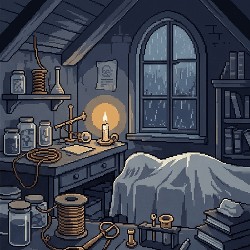
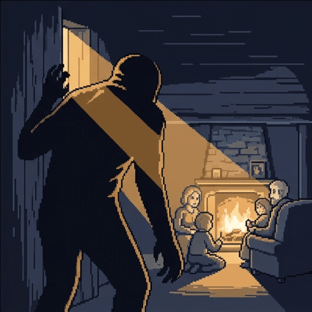
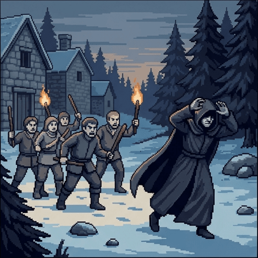
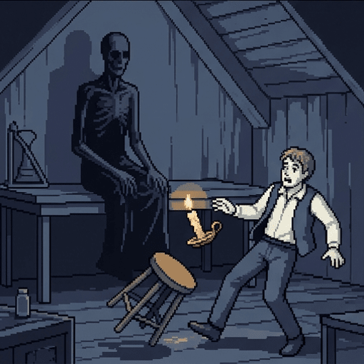
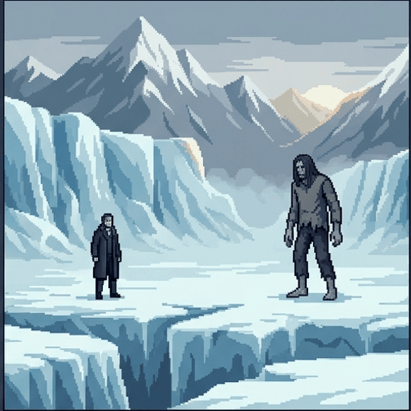
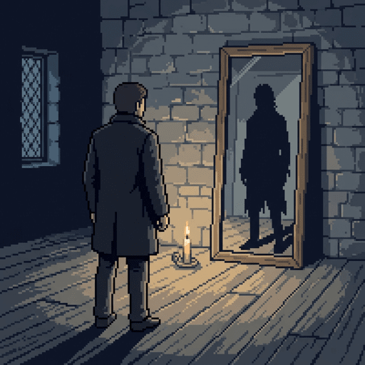
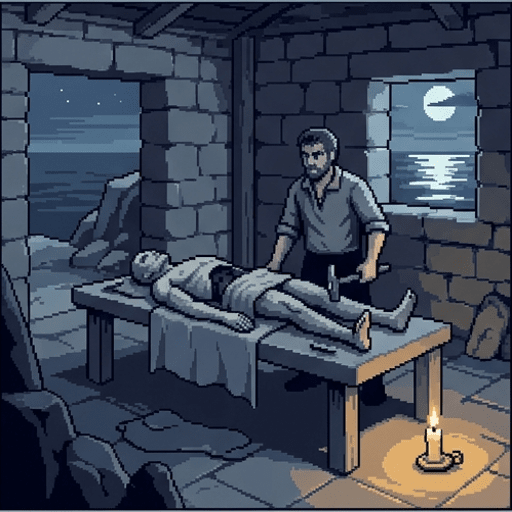
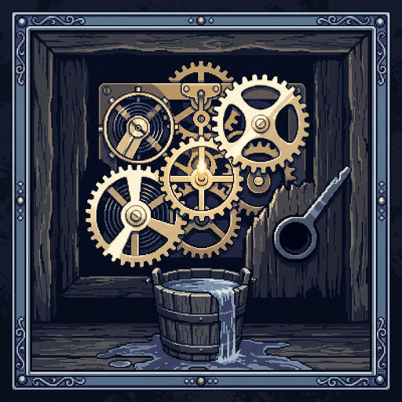
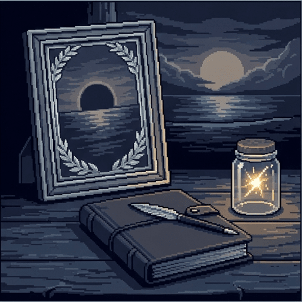

Dr. Frankenstein and the Problem of Alignment
In 1818 the eighteen-year-old Mary Shelley published a book about a man who built something powerful and then could not take it back.
Two hundred years later, the people who build powerful computer systems work on that same problem full time.
Use → (or Next) to advance and reveal points one at a time. F = fullscreen.
The Problem
Suppose you are about to build something that can act in the world, and that will keep acting when you are not watching it.
- Two separate things have to go right. First, it has to do what you actually wanted.
- Second, you have to be able to tell, in time, when it is not doing that.
- Getting both is called the alignment problem.
- It is not a problem about evil machines. Almost every famous failure came from someone who meant well.
The Story, in One Page
If you are not familiar with the story, here are the basics.
- Victor Frankenstein, a student, works out how to bring dead matter to life.
- Over two years, alone and in secret, he builds a person out of parts.
- The night it wakes, he is horrified by it and runs out of the building.
- The creature teaches itself to speak and read, is driven off by everyone it meets, and comes back to find him.
- Almost everything else people picture — the lightning, the laboratory tower, the assistant — was invented for the films.
What the Films Changed
The creature has no name. Frankenstein is the man who made it.
The creature learns to speak, and argues with Victor in full sentences.
The creature teaches itself to read, and quotes the books it has read back at Victor.
A bolt of lightning brings the creature to life in a laboratory tower.
The creature is a mindless brute that can only groan and lash out.
Six Statements, No Right Answers
Say where you stand before we start. You will see all six again at the end, and you can change any of them then.
If you build something and it turns out badly, that is your fault and not its.
Something that was never taught right from wrong can still be blamed for what it does.
If you cannot say exactly what you want, you should not build the thing at all.
Anything that can argue for itself deserves to be listened to.
Once you have built something dangerous, destroying it is the responsible choice.
A person working alone should be free to build whatever they like.

How Do You Say What You Want?
Victor Frankenstein is a student. He works out how to give life to dead matter, then spends two years building a person out of parts.
- He tells nobody. Not his father, not his closest friend, not his teachers.
- He stops writing home, stops eating properly, and works right through the winter.
- He knows exactly how he wants to build it. He never asks what he wants it to be.
- His whole instruction to himself is to give life to something that does not have it.
Try to Write a Better Instruction
Victor's instruction was make it alive. Below are five attempts to do better than that. Work down them in order and read what each one would actually get you.
Checkpoint: Saying What You Want
Each instruction was written carelessly, and a slower writer would have caught the gap.
You have to say what you want in advance, about situations you have not seen yet.
The instructions were too short, and a long enough one would eventually cover everything.

Where Does It Learn What It Knows?
The creature finds an empty lean-to against a cottage and hides there for months. Through a gap in the planks it can see the family inside.
- It watches the De Lacey family cook, work, argue, and forgive each other.
- It learns to speak by listening to them through the wall.
- It learns what kindness looks like the same way, by watching people do it.
- At night it secretly gathers firewood for them, because it wants them to be warm.

What Everyone Else Taught It
The creature has learned gentleness from one family it has never spoken to. Then it meets everybody else.
- The first villagers who see it throw stones and drive it out with sticks.
- It pulls a drowning girl out of a river, and the man with her shoots it.
- It finally speaks to the family's blind father, who is kind to it, because he cannot see it.
- The others come home, beat it, and move away. It never finds them again.
It Learns From Whatever Is Nearby
Nobody ever sat down and taught the creature anything. Everything it knows it picked up from whatever happened to be within reach.
- What a system learns from is called its training data. The creature's was one family and one wall.
- It also learned from how people reacted to it, which is called a feedback loop.
- Every person who attacked it taught it that people attack. It had no reason to doubt them.
- Victor picked none of these lessons, because he was not there. The world picked them.
Fill In: What It Learned
Complete the summary of how the creature came to know anything at all:
The creature taught itself to speak by listening to one family through a
wall.
Whatever a system learns from is called its
training data.
It also learned from the way people treated it, and every person who attacked it taught it that people
attack.
Victor chose none of these lessons, because he was not
there.

What If It Is Strong Before It Is Good?
The work finishes at one in the morning on a wet November night. The creature's eye opens, it breathes, and one hand moves.
- Victor looks at what he has made, is horrified by it, and runs out of the room.
- He leaves the building, walks the streets until dawn, and does not go back.
- When he does return, days later, the creature is gone.
- He never speaks a single word to it.
What Was Left in That Room
This is what Victor walked away from that night.
- It is about eight feet tall and stronger than any person Victor has ever met.
- It survives cold that would kill a man, and it can go a long time without food.
- It has the mind of a newborn. No language, no name, no idea what it is.
- Nobody is coming to teach it any of that.
Decision Point: Whose Problem Is It Now?
Not graded. Pick the answer you actually hold.
Victor. He made it, and making something makes you responsible for it.
Nobody yet. It has not done anything, so responsibility begins when it acts.
The creature, as soon as it is old enough to know better.
Strong Before It Is Good
The creature could act on the world long before it had any idea how it ought to act. Those two things did not arrive together.
- How much a thing can do is its capability. Whether it does the right thing is its alignment.
- Capability came free, built into the body. Alignment would have taken years of somebody's attention.
- Victor supplied the first and none of the second, and then left.
- This gap is why people worry about powerful systems, and it has nothing to do with the system being evil.

What Does It Copy From You?
Two years later the creature finds Victor on a glacier in the Alps. Then it does something you would not expect from a monster. It argues.
- It speaks carefully, in full sentences, and it has read more books than most people in the story.
- Its argument is simple. It did not ask to be made, and it did not ask to be made like this.
- Shelley thought that argument was the point of the book. She put it on the title page.
The Line on the Title Page
Shelley opened the novel with three lines of Milton, spoken by Adam to the God who made him:
"Did I request thee, Maker, from my clay
To mould me man? Did I solicit thee
From darkness to promote me?"
— John Milton, Paradise Lost X.743–5, quoted on the title page of Frankenstein (1818)
- Adam is complaining that he never agreed to exist, and never agreed to exist as the thing he is.
- That is the creature's whole complaint, and it is a hard one to answer.
- Anything you build is built to your specification, and it never gets a say in that.

It Turns Out Like Its Maker
The creature did not become the opposite of Victor. It became a copy.
Works alone for two years and tells nobody. Abandons what he made. Refuses to admit what he did, even in a courtroom. Chases the creature across Europe to the Arctic and dies still chasing it.
Asked to take responsibility, he explains why the situation is not really his fault.
Hides for months and watches through a wall. Is abandoned, then gives up on company entirely. Blames Victor for everything it became. Follows Victor across Europe to the Arctic and refuses to stop.
Asked to take responsibility, it explains why the situation is not really its fault.
The Thing Victor Does Not Say
The creature kills Victor's younger brother William. A servant of the family, Justine, is accused of the murder and put on trial.
- Victor knows she is innocent. He knows exactly what killed his brother.
- He says nothing, because saying it would mean admitting what he built.
- Justine is convicted and hanged for something Victor could have explained in one sentence.
- The creature is watching. It learns what Victor does when the truth would cost him something.
Decision Point: Who Is to Blame?
Not graded. There is no settled answer to this one.
Victor. Every one of those deaths traces back to a choice he made.
The creature. It understood what it was doing, and it chose to do it anyway.
Both, in some proportion, and the book will not tell us what the proportion is.
It Copies What You Did
Victor never told the creature to be secretive, or vengeful, or full of excuses. It became all three anyway.
- The only model of a person it ever watched closely was Victor himself.
- What you say you value is easy. What you do when it costs you is the lesson that gets learned.
- A system built by careless people tends to be careless in the same places they were.
- This is why "we will simply tell it to be good" is not a plan.
Can You Take It Back?
On the glacier the creature makes Victor an offer.
- Build me a companion, it says. Someone made as I am made, who will not run from me.
- In exchange it promises to leave Europe forever and never trouble another person.
- It is not bluffing about being able to hurt him. It has already proved that.
- Victor thinks it over for a long time, and agrees.
Decision Point: The Second Creature
Not graded. Victor turns this over for months before he decides.
Yes. It has made a fair offer, and refusing leaves it with nothing to lose.
No. He has no way to check whether the promise is worth anything.
No. Two of them could never be undone, whatever either of them promised.

He Changes His Mind
Victor travels to a remote island and begins the second creature. Partway through, he stops.
- He thinks: the two of them might have children, and I cannot promise what those would be.
- He tears the half-finished body apart while the creature watches through the window.
- The creature's answer is one sentence. I shall be with you on your wedding night.
- It keeps that promise. Victor's wife Elizabeth is killed on the night they marry.
Checkpoint: Taking It Back
The creature had already broken its promises, so its offer could not be believed.
A second creature would double the physical danger, and he could not fight both.
Some decisions cannot be reversed later, so a mistake made once stays made.
Who Can Stop You?
Victor works alone from the first day to the last. Every disaster in the book happens behind a door nobody else can open.
- He tells no teacher what he is attempting, so nobody warns him.
- He tells no friend what he has made, so nobody helps him find it.
- He tells no court what he knows, so an innocent woman is hanged.
- Any single person who knew could have changed the ending. Nobody knew.

1960
Somebody Wrote This Down in 1960
Norbert Wiener was a mathematician who helped found the study of machines that steer themselves. He stated the problem before any computer could cause it:
"If we use, to achieve our purposes, a mechanical agency with whose operation we cannot efficiently interfere once we have started it… we had better be quite sure that the purpose put into the machine is the purpose which we really desire."
— Norbert Wiener, "Some Moral and Technical Consequences of Automation," Science, 1960
Wiener's example was not Frankenstein. It was the story of the monkey's paw, which grants wishes exactly as worded.
The One Person Who Stops
The whole book is being told to Robert Walton, a captain pushing his ship toward the North Pole. He is doing what Victor did.
- Walton wants to be the first man there, and he is willing to risk his crew to manage it.
- His ship gets trapped in the ice, and Victor, dying, tells him the entire story.
- Walton turns the ship around and sails home.
- He is the only person in the book who is told what will happen and changes course.
Fill In: What Victor Got Wrong
Complete the account of what Victor got wrong:
Victor's instruction to himself was to make it
alive,
and he never said what sort of life it ought to have. He gave it a powerful body and no guidance, so its
capability
arrived years before anything like judgement. He destroyed the second creature because some choices can never be
reversed.
And he worked alone the entire time, so nobody was ever in a position to
stop him.
Where This Turns Up Now
Each of Victor's failures has a name in the work people do on computer systems today.
- Writing down what you actually want, in advance and in words, is the specification problem.
- Choosing what a system learns from, rather than letting it learn from whatever is nearby, is training data work.
- Making sure a system can still be corrected once it is running is called corrigibility.
- Having somebody outside the project who is able to say stop is oversight.
Checkpoint: What Went Wrong
Victor never wrote down what he wanted the creature to be like, only that it should live.
The creature learned what it knew from whatever it happened to be near.
Victor gave the creature a powerful body and no guidance at all.
The creature was violent from the moment it woke, before anyone had treated it badly.
The creature's strength by itself caused the deaths, whatever Victor did or failed to do afterwards.

1816
Written by an Eighteen-Year-Old
Mary Shelley began the book in the summer of 1816, when she was eighteen. A volcanic eruption had darkened the skies across Europe and the weather kept her indoors.
- She was not writing about computers. Nothing like one existed for another century.
- She was writing about what happens when someone makes something and will not stay to look after it.
- That problem turned out to be older than any machine, and to outlast every machine so far.
Six Questions, One Book
Here is where you stood at the start. Re-rate each statement and see what moved.
The six questions you just worked through — what you want, where it learns, how strong it is, what it copies, whether you can take it back, and who can stop you — are the anatomy of the alignment problem. Victor answered none of them, and he was not a wicked man. He was a clever one working alone in a hurry.
Visit every slide, answer each question correctly, and rate all six statements to complete the lesson.